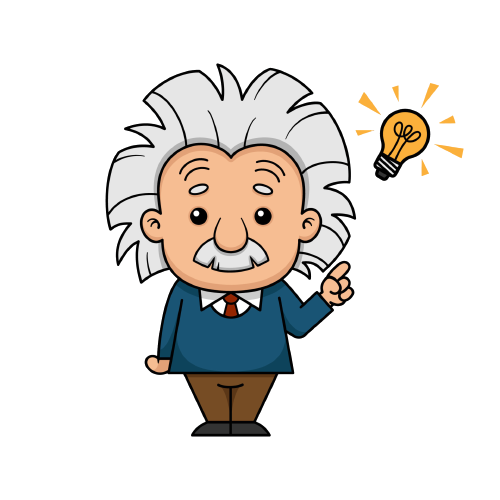

Albert Einstein
Albert Einstein nasceu em 14 de março de 1879 e faleceu em 18 de abril de 1955, sendo um renomado físico teórico.

Albert Einstein foi um dos maiores cientistas da história, conhecido principalmente pela Teoria da Relatividade. Nascido em 1879, na cidade de Ulm, na Alemanha, Einstein revolucionou a física com suas descobertas e contribuições para o campo científico. Sua genialidade e mente brilhante fizeram dele um ícone da ciência e um exemplo de perseverança e dedicação.
Além de sua famosa teoria, Einstein também fez contribuições significativas para a compreensão da natureza da luz, do movimento das partículas e da energia. Suas equações matemáticas e experimentos revolucionaram a forma como entendemos o universo. Sua mente inquisitiva e curiosa o levaram a questionar conceitos estabelecidos e buscar respostas para os mistérios do cosmos.
Além de suas realizações científicas, Albert Einstein também era conhecido por seu ativismo político e defesa dos direitos humanos. Durante sua vida, ele se posicionou contra o nazismo e lutou pela paz mundial. Sua influência vai além do campo científico, inspirando gerações de pessoas a nunca pararem de questionar, explorar e buscar conhecimento. O legado de Albert Einstein perdura até os dias atuais, sendo uma fonte de inspiração para todos aqueles que buscam entender o mundo ao seu redor.
Albert Einstein, um dos cientistas mais influentes da história, realizou diversos trabalhos que revolucionaram a compreensão da física moderna. Suas contribuições foram fundamentais para o desenvolvimento de teorias que transformaram nossa visão do universo.
Entre seus trabalhos mais famosos, destaca-se a Teoria da Relatividade Especial, publicada por Einstein em 1905. Nessa teoria, ele propôs que as leis da física são as mesmas para todos os observadores que se movem em velocidades constantes em relação uns aos outros. Isso levou a uma nova compreensão do tempo, espaço e gravidade.
Em 1915, Einstein apresentou a Teoria da Relatividade Geral, uma extensão da sua teoria anterior. Essa teoria descreve a gravidade como uma curvatura do espaço-tempo causada pela presença de massa e energia. Sua formulação matemática permitiu prever com precisão o comportamento da luz em campos gravitacionais intensos.
Outro trabalho notável de Einstein foi sua explicação do efeito fotoelétrico, pelo qual ele recebeu o Prêmio Nobel de Física em 1921. Ele demonstrou que a luz se comporta como partículas (fótons) e não apenas como ondas, como era amplamente aceito na época.
Além disso, Einstein também contribuiu para o desenvolvimento da física quântica, com sua crítica à interpretação clássica da mecânica quântica e sua defesa do princípio da incerteza proposto por Werner Heisenberg.
Os trabalhos científicos de Albert Einstein tiveram um impacto profundo na ciência e na nossa compreensão do universo. Suas teorias continuam sendo fundamentais para a física moderna e seu legado perdura como um marco na história da ciência.
Albert Einstein faleceu em 18 de abril de 1955 aos 76 anos de idade. A causa de sua morte foi uma ruptura de um aneurisma da aorta abdominal, que resultou em uma hemorragia interna. Apesar dos esforços médicos, Einstein não conseguiu sobreviver à gravidade da condição. Sua morte foi uma perda significativa para o mundo científico e sua contribuição para a física continua a ser lembrada e valorizada até os dias de hoje.